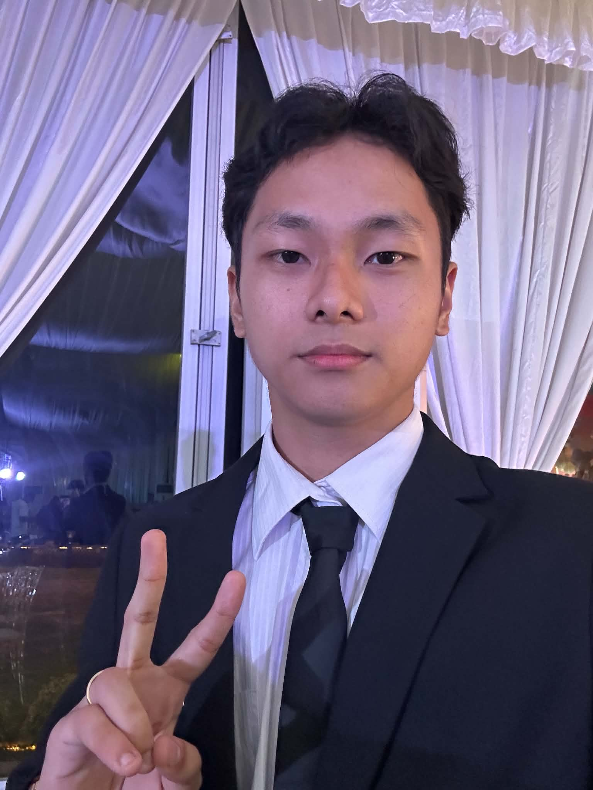

My name is Min Soo O. Jeon, a BSIT 3rd year student. I am interested in the physical hardware of computers, programming and more. I hope to learn more about what there is about computers & techonlogy in general and i hope to improve my existing skills through school projects, activities, seatworks and as well as my own projects that i make outside of school.
Educational goal wise i hope to continue developing my knowledge in everything technology become as skilled of a IT professional in the future. As well as not just sticking to what i know, but also branch out into other opportunities that presents itself to me.